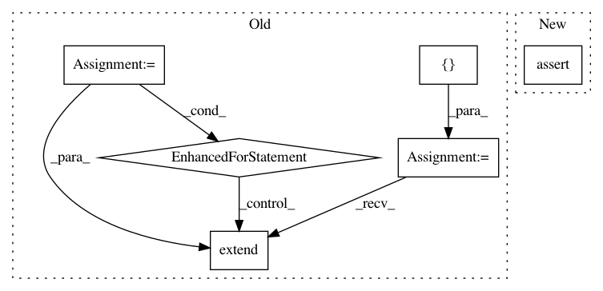

8e95a38e7a4be3a3edd8139dbd26e994e50d0a0c,keras/distribute/multi_worker_test.py,KerasMultiWorkerTestIndependentWorker,testSimpleModelIndependentWorkerSync,#KerasMultiWorkerTestIndependentWorker#Any#,191
Before Change
trained_loss, _ = model.evaluate(train_ds, steps=steps)
self.assertLess(trained_loss, orig_loss)
threads = self.run_multiple_tasks_in_threads(
_independent_worker_fn,
cluster_spec,
verification_callback=verification_callback)
threads_to_join = []
strategy = strategy_cls()
if strategy.extended.experimental_between_graph:
for ts in threads.values():
threads_to_join.extend(ts)
else:
threads_to_join = [threads["worker"][0]]
self.join_independent_workers(threads_to_join)
verification_callback.verify(self)
After Change
epochs=2,
steps_per_epoch=steps,
callbacks=[verification_callback])
self.assertIsInstance(history, keras.callbacks.History)
trained_loss, _ = model.evaluate(train_ds, steps=steps)
self.assertLess(trained_loss, orig_loss)
verification_callback.verify(self)
In pattern: SUPERPATTERN
Frequency: 3
Non-data size: 6
Instances
Project Name: keras-team/keras
Commit Name: 8e95a38e7a4be3a3edd8139dbd26e994e50d0a0c
Time: 2021-04-04
Author: scottzhu@google.com
File Name: keras/distribute/multi_worker_test.py
Class Name: KerasMultiWorkerTestIndependentWorker
Method Name: testSimpleModelIndependentWorkerSync
Project Name: tensorflow/minigo
Commit Name: 85f717770691b70cfa9077d2d3228b205d19b18d
Time: 2018-08-15
Author: sethtroisi@google.com
File Name: tests/test_preprocessing.py
Class Name: TestPreprocessing
Method Name: test_tpu_rotate
Project Name: tensorflow/minigo
Commit Name: 85f717770691b70cfa9077d2d3228b205d19b18d
Time: 2018-08-15
Author: sethtroisi@google.com
File Name: tests/test_preprocessing.py
Class Name: TestPreprocessing
Method Name: test_rotate_pyfunc